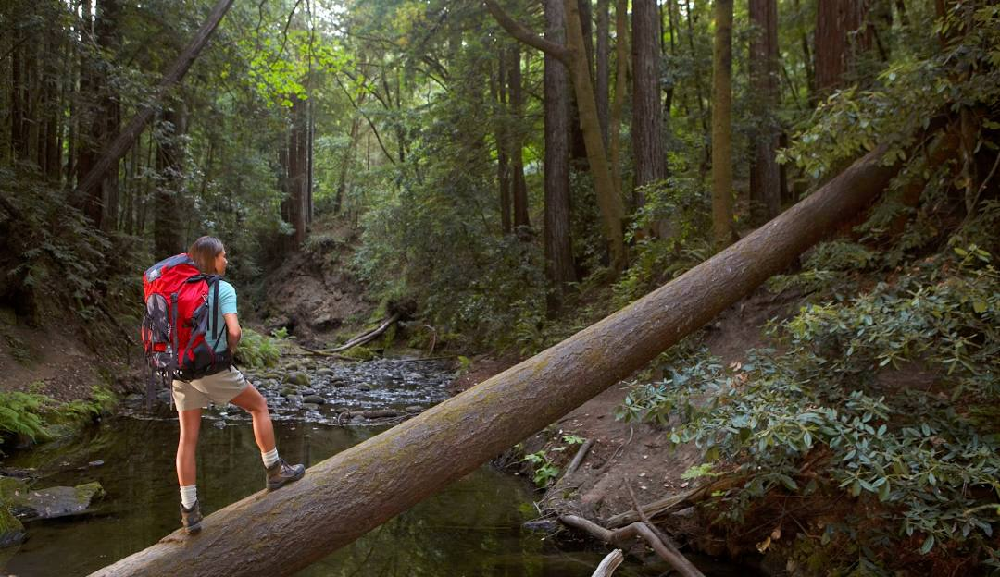
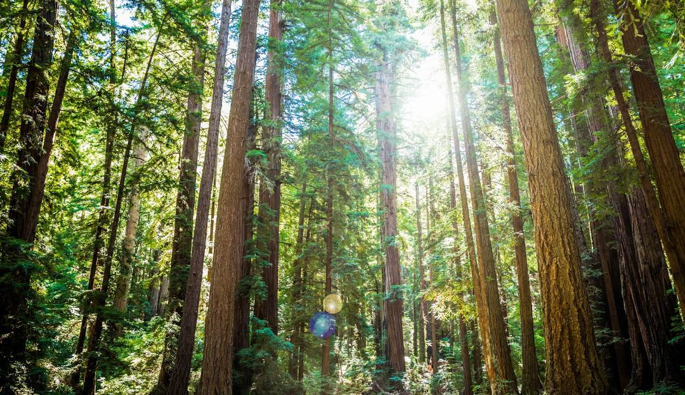

No. 1 Byrne-Milliron Forest
The Byrne-Milliron Forest will be closed to public access from July 1, 2024 - May 1, 2025 for a sustainable timber harvest. The Land Trusts comprehensive forest management plan for the property is based on maintaining stand characteristics that maximize productivity yet are sustainable over time, which is why the Byrne Forest is thriving. Trees have been hand selected for removal so that nearby trees can grow more vigorously. Selection depends on the slope, the size of nearby trees, the ease of getting them out, the proximity of creeks, and more. Ecological benefits of selection forestry include improved wildlife habitat and increased carbon sequestration. The harvest is being conducted by Big Creek Lumber and overseen by Land Trust staff.
Join Our Newsletter!
Forest of Nisene Marks State Park

No. 2 Forest of Nisene Marks State Park
Off the beaten path, The Forest of Nisene Marks is a refreshing retreat from the busy towns and beaches along Highway 1 near Santa Cruz. Its dense second- and third-growth redwood forest rises from near sea level to steep coastal mountains. Most visitors come to picnic near Aptos Creek or to hike, jog, or bike on 30 miles of trails in rugged semi-wilderness, rising from sea level to steep coastal mountains of more than 2,600 feet. The parks land has a bittersweet beauty. Almost all of todays redwood forest was clear-cut in a 40-year logging frenzy from 1883 to 1923. When the loggers left the Aptos Canyon, the forest began to heal itself; now, the scars grow fainter with each passing year. The Forest of Nisene Marks is a monument to forest regeneration and the future—it is a forest in a perpetual state of becoming.
Henry Cowell Redwoods State Park
No. 3 Henry Cowell Redwoods State Park
Henry Cowell Redwoods State Park is located in the Santa Cruz Mountains and is most famous for the 40-acre grove of towering old-growth redwood trees. Its historical significance and spectacular scenery draw travelers from around the world. Visitors can enjoy hiking, horseback riding, picnicking, swimming, and camping on more than 4,650 acres of forested and open land. These skyscraping redwoods were admired by explorer John C. Frémont, President Theodore Roosevelt, and inspired some of Californias earliest redwood preservation efforts. Take a walk beyond the redwood grove and youll find four diverse habitats that this park preserves: grasslands, river/riparian, sandhills, and redwoods. The tallest tree in the park is approximately 277 feet tall, about 16 feet wide, and around 1,500 years old. Keen-eyed visitors may spot banana slugs, black-tailed deer, coyotes, bobcats, or steelhead trout.
- Pinto Lake County Park -

The trail at Pinto Lake County Park is a 2.7-mile loop that offers a relaxing, family-friendly experience. The path is mostly flat and well-shaded, making it perfect for casual hikers and families with young children. The trail winds around the peaceful Pinto Lake, where visitors can enjoy views of waterfowl and other birds. Along the way, you'll pass through a beautiful meadow, spot mature coast live oak trees, and walk under towering eucalyptus trees, adding to the park's natural charm. In addition to the hiking trail, the park also features a disc golf area and a bike jump track suitable for beginner riders. Whether you're looking to hike, play a round of disc golf, or try out the bike track, Pinto Lake County Park offers a variety of outdoor activities for everyone to enjoy.